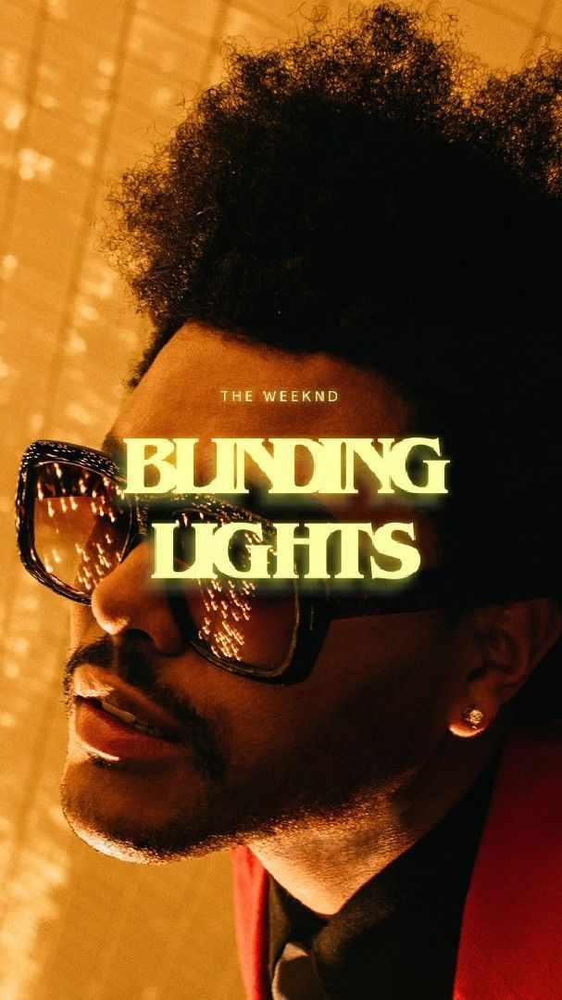

《Blinding Lights》是加拿大歌手 The Weeknd 于2019年发行的一首流行歌曲， 收录在他的专辑《After Hours》中。这首歌采用了浓厚的80年代复古电子音乐风格， 节奏明快、旋律极具感染力。
歌曲讲述了在孤独和迷失之后重新找到爱与方向的情感主题， 表达了对陪伴与温暖的渴望。 凭借独特的复古氛围和流行旋律，这首歌迅速在全球流行音乐排行榜上取得巨大成功。
《Blinding Lights》在多个国家的音乐榜单上排名第一， 并在流媒体平台上获得数十亿次播放， 被认为是近年来最具影响力的流行歌曲之一。
这首歌的名称"Blinding Lights"（刺眼的灯光）象征着爱情中的迷茫与困惑。 歌曲通过霓虹灯下的城市夜景来表现现代爱情的复杂性和矛盾性—既吸引人，又令人困顿。 The Weeknd用这个意象深刻而诗意地描绘了失落爱人的渴望。
80年代复古电子音乐（Synthwave）的加入是这首歌成功的关键因素之一。 电子合成器的运用、鼓点的节奏感和The Weeknd标志性的虚弱嗓音完美配合， 创造了一种既怀旧又现代的独特听觉体验。
这首歌创造了多项音乐记录。它在美国Billboard Hot 100榜单上排名第一的周数创造了纪录， 也是Spotify平台上最受欢迎的歌曲之一。它的成功启发了许多艺术家重新探索复古音乐元素。